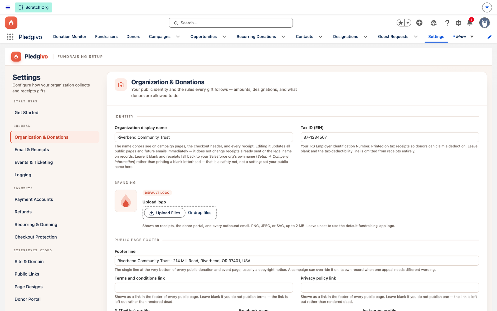
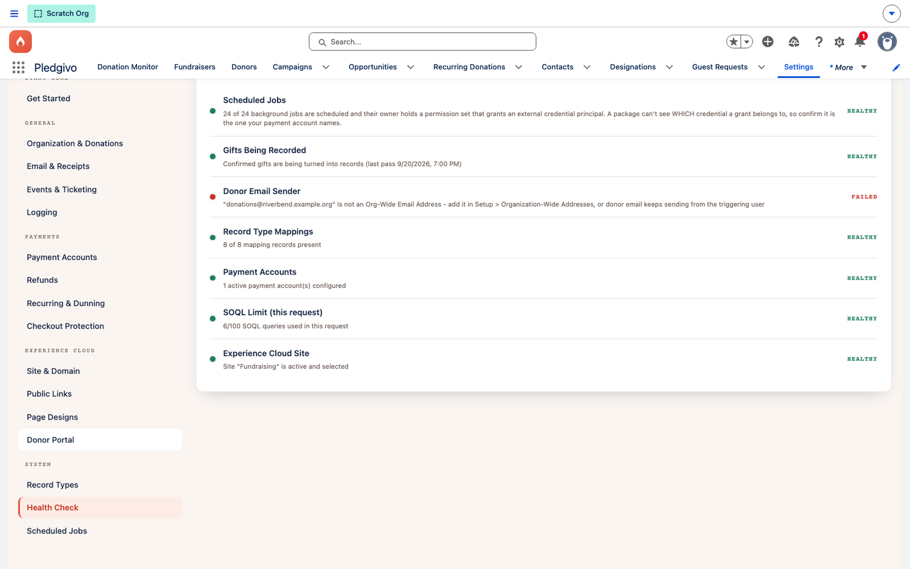

Getting Started
Setup assistant#
All configuration lives in one place — the Settings tab. It opens on a Get Started checklist of the one-time post-install steps, and every other panel, in four groups below it, is available and editable at any time.
Where it lives#
Open the Pledgivo app → Settings tab (visible only to users with the
Fundraising_Admin permission set). The tab hosts a single console — a left-hand navigation
tree grouped into Start here plus four configuration sections, with one panel on the right for
whichever item is selected. A fresh install lands on Get Started; once that reads 7/7 you can
ignore it and go straight to whatever you came to change.

**What it shows.** The left-hand vertical navigation with its four groups (General, Payments, Experience Cloud, System) and the Organization & Donations panel open on the right — identity fields (org name, Tax ID) and gift rules (currency, fee-on-top, min/max amount, suggested amounts).
Start here#
| Panel | What it does |
|---|---|
| Get Started | The seven one-time post-install steps, each checked against your org live — permission sets, record types, the Experience site, Stripe, the credential grant, background jobs, and branding. Several have a one-click fix; the rest link to the panel that owns them. Below them sits one optional step, Third-party content, which reports which content hosts your org trusts but never counts toward 7/7. See After you install. |
The four groups#
General#
| Panel | What it configures |
|---|---|
| Organization & Donations | Org display name, thank-you page CTA, suggested donation amounts shown on the donation form |
| Email & Receipts | Sender info, brand colors, and copy overrides for the 5 receipt/notification emails. See Brand your receipt and notification emails. |
| Events & Ticketing | Event ticketing defaults — deductible-amount mode, whether attendees sync to Campaign Members. See Set up a ticketed event. |
| Logging | The org's Log_Level__c — how verbose AppLogger writes are, for troubleshooting without leaving debug logs on permanently |
Payments#
| Panel | What it configures |
|---|---|
| Payment Accounts | An eleven-step guided checklist for building the two Stripe credentials yourself in Setup (the package builds none), each step graded against your org where the platform lets a package read it and marked confirm this yourself where it doesn't, plus the accounts themselves and their connection test. See Connecting Stripe. |
| Refunds | The refund master switch, refund window (days), and refund permission gating |
| Recurring & Dunning | Failed-payment retry count, retry interval, grace period before auto-cancel, and dunning email frequency. See Configure recurring dunning. |
Experience Cloud#
| Panel | What it configures |
|---|---|
| Site & Domain | The Experience Cloud site connection, embed widget master switch, and CORS allowlist for embedded donate buttons. See Embed a donate button on your website. |
| Public Links | Guest-facing URLs — donation pages, event pages, fundraiser pages |
| Page Designs | The Page Canvas composer — page designs, theme tokens, and the Compose → Payment → Thank You block layout. See Set up your first campaign. |
| Donor Portal | Magic-link donor self-service portal — which panels donors see, request-link and confirmation screen copy |
System#
| Panel | What it configures |
|---|---|
| Record Types | Detects your org's account model (standard vs. Person Accounts) and lets you override which Record Type the package uses per object — overrides apply to new records only, existing records are never modified |
| Health Check | A checklist of package health signals — scheduled job status, record type mappings, active payment accounts, SOQL limit usage, and Experience Cloud site status |
| Scheduled Jobs | Cron cadence for the background donation-finalizer and reconciliation jobs, plus manual "Run now" triggers for recurring billing, donor rollups, log retention purges, refund/dispute reconciliation, the Stripe payment sweep, and campaign-total recalculation |
Two things that are not in this console
Donation Monitor and Diagnostic Logs are their own tabs in the app navigation, not Settings panels. Both are recurring operational work — checking whether a payment is stuck, reading what the app recorded during an incident — rather than one-time configuration, and reaching them shouldn't mean walking into the console that changes the org's settings. The Logging panel above still sets what gets logged; the Diagnostic Logs tab is where you read it. See Monitor donations and read the logs.

**What it shows.** The Health panel with a status pill per signal — here Record Type Mappings, Payment Accounts, and SOQL Limit read HEALTHY, Experience Cloud Site reads ATTENTION (site is still "Under Construction"), and Scheduled Jobs reads FAILED (0 of 17 running) — plus a Scheduled Jobs section with "Run a job now" actions. This isn't a hypothetical all-green state: it's exactly the kind of mixed result you'll see on a fresh org before every job has been scheduled and the site published.
A practical first pass#
For a first-time setup, start on Start here → Get Started and work its list top to bottom — it is this order, checked against your org as you go, and it covers the two steps that can only be done in Salesforce Setup. Use the sequence below only if you'd rather drive the panels yourself:
- System → Record Types — confirm org detection; override a Record Type only if you need something other than the packaged default.
- Payments → Payment Accounts — connect a Stripe account. See Connecting Stripe.
- General → Organization & Donations — set your org name and suggested donation amounts.
- Payments → Recurring & Dunning — accept the defaults or adjust retry/grace-period behavior.
- Experience Cloud → Site & Domain — confirm your Experience Cloud site connection. If you haven't created the site yet, do that first — see Set up your Experience Cloud site.
- Experience Cloud → Page Designs — pick a starting page design theme for your first campaign.
- System → Health Check — confirm everything shows green before you publish anything public.
Everything else — Email & Receipts, Events & Ticketing, Refunds, Public Links, Donor Portal, Logging — has sensible defaults and can be revisited later.
Then leave Settings behind: campaigns and ticketed events are created in the Fundraisers tab, not here. See Set up your first campaign.
Next#
-
Field-by-field settings reference
What every setting does, and exactly what happens when you change it.
-
Launch a campaign
Create a Campaign, compose its page, and publish.
-
Settings & integrations concept
How the three-tier settings model (Settings, packaged registry, credentials) fits together.